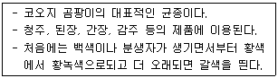
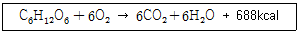

식품산업기사 (2017-03-05 기출문제)
1과목: 식품위생학
1. 우리나라 남해안의 항구와 어항 주변의 소라 고동 등에서 암컷에 수컷의 생식기가 생겨 불임이 되는 임포섹스(imposex) 현상이 나타나게 된 원인 물질은?
- 트리뷰틸주석(tributyltin)
- 폴리클로로비페닐(polychrolobipheny)
- 트리할로메탄(trihalomethane)
- 디메틸프탈레어트(dimethyl phthalate)
(정답률: 87%)

2. 경구감염병의 특징 이라고 할 수 없는 것은?
- 소량 섭취하여도 발병한다.
- 지역적인 특성이 인정된다.
- 환자 발생과 계절과의 관계가 인정된다.
- 잠복기가 짧다.
(정답률: 79%)
3. 다음중 Aspergillus flavus의 생육에 가장 적당한 조건은?
- 25~30℃, 상대습도 80%
- 10~15℃, 상대습도 60%
- 0~5℃, 상대습도 60%
- -5~0℃, 상대습도 70%
(정답률: 78%)
4. 도자기 또는 항아리 등에 사용되는 유약에서 특히 문제가 되는 유해금속은?
- 철
- 구리
- 납
- 주석
(정답률: 87%)
5. 유해물질에 관련된 사항이 바르게 연결된 것은?
- Hg - 이타이이타병 유발
- DDT - 유기인제
- Parathion - Cholinesterase 작용 억제
- Dioxin - 유해성 무기화합물
(정답률: 65%)
6. 자가품질검사 기준에서 자가품질검사 주기의 적용 시점은?
- 제품 제조일을 기준으로 산정한다.
- 유통기한 만료일을 기준으로 산정한다.
- 판매 개시일을 기준으로 산정한다.
- 품질유지 기한 만효일을 기준으로 산정한다.
(정답률: 79%)
7. 식품을 자외선으로 살균할 때의 특징이 아닌 것은?
- 유기물 특히 단백질 식품에 효과적이다.
- 조사 후 조사 대상물에 거의 변화를 주지 않는다.
- 비열을 살균한다.
- 살균효과는 대상물의 자외선 투과율과 관계있다.
(정답률: 54%)
8. 기타 영·유아식에 사용할 수 있는 첨가물이 아닌 것은?
- L-시스틴
- 젤라틴
- 스테비오사이드
- 뮤신
(정답률: 74%)
9. 착색료로서 갖추어야 할 조건이 아닌 것은?
- 인체에 독성이 없을 것
- 식품의 소화흡수율을 높일 것
- 물리화학적 변화에 안정할 것
- 사용하기 간편할 것
(정답률: 85%)
10. 식품의 원재료부터 제조 가공 보존 유통 조리단계를 거쳐 최종 소비자가 섭취하기 전까지의 각 단계에서 발생할 우려가 있는 위해요소를 규명하고 중점적으로 관리하는 것은?
- GMP 제도
- 식품안전관리인증기준
- 위해식품 자진 회수 제도
- 방사살균(Radappertization) 기준
(정답률: 87%)
11. 식중독의 역학조사 시 원인규명이 어려운 이유가 아닌 것은?
- 조사 전에 치료가 되어 환자에게서 원인 물질이 검출되지 않는 경우가 발생하므로
- 식품의 냉동 냉장보관으로 인해 원인물질(미생물, 화학물질)의 검출이 불가능하므로
- 식중독을 일으키는 균이나 독소가 식품에 극미량 존재하므로
- 식품이 여러 가지 성분으로 복잡하게 구성되어 있으므로
(정답률: 73%)
12. 식품의 방사선 조사 처리에 대한 설명 중 틀린 것은?
- 외관상 비조사식품과 조사식품의 구별이 어렵다.
- 화학적 변화가 매우 적은 편이다.
- 저온 가열 진공 포장 등을 병용하여 방사선 조사량을 최소화할 수 있다.
- 투과력이 약해 식품 내부의 살균은 불가능하다.
(정답률: 87%)
13. 굴 모시조개 등이 원인이 되는 동물성 중독 성분은?
- 테트로도 톡식
- 삭시톡신
- 리코핀
- 베네루핀
(정답률: 78%)
14. 식중독균인 황색 포도상구균(Staphylococcus aureus)과 이균이 생산하는 독소인 enterotoxin에 대한 설명 중 옳은 것은?
- 이 구균은 coagulase 양성이고 mannitol을 분해한다.
- 포자를 형성하는 내열성균이다.
- 독소 중 A형만 중독 증상을 일으킨다.
- 일반적인 조리 방법으로 독소가 쉽게 파괴 된다.
(정답률: 49%)
15. Aspergillus 속 곰팡이 독소가 아닌 것은?
- 아플라톡식(Aflatoxion)
- 스테리그마토시스틴류(sterigmatocystin)
- 제랄레논(Zearalenone)
- 오크라톡식(Ochratoxin)
(정답률: 58%)
16. 수인성 감염병의 특징이 아닌 것은?(오류 신고가 접수된 문제입니다. 반드시 정답과 해설을 확인하시기 바랍니다.)
- 단시간에 다수의 환자가 발생한다.
- 동일 수원의 급수지역에 환자가 편재된다.
- 잠복기가 수 시간으로 비교적 짧다.
- 원인 제거 시 발병이 종식될 수 있다.
(정답률: 60%)
17. 멜라민 수지로 만든 식기에서 위생상 문제가 될수 있는 주요 성분은?
- 비소
- 게르마늄
- 포름알데히드
- 단량체
(정답률: 86%)
18. 보존료의 사용 목적과 거리가 먼 것은?
- 수분감소의 방지
- 신선도 유지
- 식품의 영양가 본존
- 변질 및 부패방지
(정답률: 62%)
19. 가공식품에 잔류한 농약에 대하여 식품의 기준 및 규격에 별도로 잔류허용기준을 정하지 않은 경우 무엇을 우선적으로 적용하는가?
- WOH
- FDA기준
- CODEX기준
- FCC/CER
(정답률: 80%)
20. 식품의 제고 가공 공정에서 일반적인 HACCP의 한계기준으로 부적합한 것은?
- 미생물 수
- Aw와 같은 제품 특성
- 온도 및 시간
- 금속검출기 감도
(정답률: 52%)
2과목: 식품화학
21. 유지를 가열하면 점도가 커지는 것은 다음 중 어느 반응에 의한 것인가?
- 산화반응
- 가수분해
- 중합반응
- 열분해 반응
(정답률: 73%)
22. 감귤류에 특히 많은 유기산은?
- tartaric acid
- citric acid
- succinic acid
- acetic acid
(정답률: 82%)
23. 유화액의 수중유적형과 유중수적형을 결정하는 조건으로 가장 거리가 먼 것은?
- 유화제의 성질
- 물과 기름의 비율
- 유화액의 방치시간
- 물과 기름의 첨가 순서
(정답률: 64%)
24. 비타민 A의 산화를 방지할 수 있는 것은?
- 비타민 B
- 비타민 D
- 비타민 E
- 비타민 K
(정답률: 70%)
25. 식품의 조직감(texture) 특성에서 견고성(hardness)이란?
- 반고체식품을 삼킬 수 있는 정도까지 씹는데 필요한 힘
- 식품을 파쇄하는데 필요한 힘
- 식품의 형태를 구성하는 내부적 결합에 필요한 힘
- 식품의 형태를 변형하는데 필요한 힘
(정답률: 50%)
26. 15%의 설탕용액에 0.15%의 소금 용액을 동량 가하면 용액의 맛은?
- 짠맛이 증가한다.
- 단맛이 증가한다.
- 단맛이 감소한다.
- 맛의 변화가 없다.
(정답률: 86%)
27. 적색의 양배추를 식초를 넣은 물에 담글 때 나타나는 현상은?
- 녹색으로 변한다.
- 흰색으로 변한다.
- 적색이 보존된다.
- 청색으로 변한다.
(정답률: 80%)
28. 우유 단백질 중 치즈 제조에 사용되는 것은?
- 락토글로불린(lactoglobulin)
- 락토알부민(lactialbumin)
- 카세인(casein)
- 글루텐(gluten)
(정답률: 89%)
29. 단백질의 변성인자가 아닌 것은?
- 산
- 염류
- 아미노산
- 표면장력
(정답률: 45%)
30. 녹색채소(시금치 등)를 살짝 데칠 경우에 그 녹색이 더욱 선명해 지는 이유는?
- 데치기에 의하여 글로로필 색소의 Mg이 Cu로 치환되었기 때문이다.
- 데치기에 의하여 식물조직에 존재하는 chlotophyllase가 활성화 되었기 때문이다.
- 데치기에 의하여 식물조직에 산이 생성되었기 때문이다.
- 데치기에 의하여 식물조직에 알칼 리가 생성되었기 때문이다.
(정답률: 66%)
31. 선도가 저하된 해산어류의 특유한 비린 냄새의 원인은?
- piperidine
- trimethylamine
- methyl mercaptan
- actin
(정답률: 87%)
32. 다음 중 소수기에 속하는 것은?
- -OH
- -CH2-CH3
- -NH2
- -CHO
(정답률: 60%)
33. 1M NaOH 용액 1L에 녹아있는 NaOH의 중량은?
- 30g
- 35g
- 40g
- 50g
(정답률: 65%)
34. 유지를 튀김에 사용하였을 때 나타나는 화학적인 현상은?
- 산가가 감소한다.
- 산가가 변화하지 않는다.
- 요오드가가 감소한다.
- 요오드가가 변화하지 않는다.
(정답률: 79%)
35. 아미노산의 중성용액 혹은 약산성 욕액을 시약을 가하여 같이 가열했을 때 CO2를 발생하면서 청색을 나타내는 반응으로 아미노산이나 펩티드 검출 및 정량에 이용되는 것은?
- 밀론 반응
- 크산토프로테인 반응
- 닌히드린 반응
- 뷰렛 반응
(정답률: 64%)
36. 식품의 기본 맛 4가지 중 해리된 수소이온(H+)과 해리되지 않은 산의 염에 기인하는 것은?
- 단맛
- 짠맛
- 신맛
- 쓴맛
(정답률: 70%)
37. 다음 중 인지질로 구성된 것은?
- lecithin, cephalin
- sterol, squalene
- triglyceride, glycerol
- wax, tocopherol
(정답률: 68%)
38. 다음 중 Vitamin A를 가장 많이 함유하는 식품은?
- 우유
- 버터
- 간유
- 고등어
(정답률: 68%)
39. 다음 중 식물성 식품 성분 가운데 자외선을 쪼이면 비타민 D로 전환되는 것은?
- cholesterol
- sitosterol
- ergosterol
- stigmasterol
(정답률: 75%)
40. 수분활성도에 대한 설명 중 틀린 것은?
- 일반적으로 수분활성도가 0.3 정도로 낮으면 식품내의 효소반응은 거의 정지된다.
- 일반적으로 수분활성도가 0.85 이하이면 미생물 중 세균의 생장은 거의 정지된다.
- 일반적으로 수분활성도가 0.7 이상이 되면 비효소적 갈변반응의 속도는 감소하기 시작한다.
- 일반적으로 수분활성도가 0.2 이하에서는 지질산화의 반응속도가 최저가 된다.
(정답률: 57%)
3과목: 식품가공학
41. 어패육이 식육류에 비하여 쉽게 부패하는 이유가 아닌 것은?
- 수분과 지방이 적어 세균 번식이 쉽다.
- 어체 중의 세균은 단백질분해효소의 생산력이 크다.
- 자기소화작용이 커서 육질의 분해가 쉽게 일어난다.
- 조직이 연약하여 외부로부터 세균의 침입이 쉽다.
(정답률: 67%)
42. 수산물이 화학적 선도판정의 지표가 되지 않는 것은?
- PH
- 휘발성 염기질소
- 트리메틸아민옥시드(trimethylamine oxide)
- K value
(정답률: 54%)
43. 과일 및 채소의 수확 후 생리현상으로 중량감소를 일으키는 가장 주된 작용은?
- 휴먼작용
- 증산작용
- 발아발근작용
- 후숙작용
(정답률: 53%)
44. 육질의 연화를 위한 숙성과정에서 일어나는 현상에 대한 설명으로 틀린 것은?
- pepsin, trypsin, cathepsin 등의 효소작용에 의한 단백질 가수분해작용이 일어난다.
- actomyosin의 해리현상이 일어난다.
- 혈색소인 hemoglobin이나 myoglobin은 Fe2+가 Fe3+로 된다.
- 숙성과정에서 도살 전과 비교하여 pH의 변화는 없다.
(정답률: 79%)
45. 냉동포장재로 가장 적합한 것은?
- 염화비닐리덴
- 염산고무
- 염화비닐
- 폴리에스테르
(정답률: 64%)
46. 밀가루를 점탄성이 강한 반죽으로 만들기 위한 조치 방법으로 옳은 것은?
- 혼합을 과도하게 한다.
- 밀가루를 숙성, 산화시킨다.
- 회분함량이 많은 전분을 사용한다.
- 글루텐 함량이 적은 박력분을 사용한다.
(정답률: 71%)
47. 우유가 단맛을 약간 가진 것은 어떤 성분 때문인가?
- 나이아신
- 리파아제
- 포도당
- 유당
(정답률: 85%)
48. 유지의 탈색공정 방법으로 사용되지 않는 것은?
- 수증기 증류법
- 활성백토법
- 산성백토법
- 활성탄법
(정답률: 72%)
49. 다음 중 유화제가 아닌 것은?
- lecithin
- monoglyceride
- cephalin
- arginine
(정답률: 65%)
50. 아이스크림 품질 평가 중 큰 유당결정이 생겨 사상 조직이 나타나는 현상은?
- buttery body
- crumbly body
- fluffy body
- sandiness
(정답률: 60%)
51. 고기의 신선도를 유지하기 위하여 냉동법으로 저장한 경우 얼음결정에 의하여 발생할 수 있는 변화가 아닌 것은?
- 근육조직 손상
- 탈수
- 산패
- 부피감소
(정답률: 53%)
52. 사과통조림을 최종당도 20°BX로 하고자 한다. 이 때 고형량은 250g, 고형분 중 당은 6%, 내용총량 430g으로 하고자 할 때 주입액의 당도는 얼마인가?
- 20°BX
- 28.6°BX
- 39.4°BX
- 61.2°BX
(정답률: 43%)
53. 청국장에 대한 설명으로 틀린 것은?
- 타르색소가 검출되어서는 아니 된다.
- 된장보다 고형물 덩어리가 많다.
- 콩은 황백색 종자가 좋다.
- 제조에 사용되는 natto균은 Aspergillus속 이다.
(정답률: 66%)
54. 식품의 기준 및 규격에서 사용하는 단위가 아닌 것은?
- 길이 : m, cm, mm
- 용량 : L, mL
- 압착강도 : N
- 열량 : W, kW
(정답률: 80%)
55. 효소 당화법에 의한 포도당 제조에 대한 설명으로 틀린 것은?
- 분말액은 식용이 가능하다.
- 산 당화법에 비해 당화 시간이 길다.
- 원료는 완전히 정제할 필요가 없다.
- 당화액은 고미가 강하고 작색물질이 많다.
(정답률: 40%)
56. 가열치사 시간을 1/10로 감소시키기 위하여 처리하는 가열온도의 변화를 나타내는 값은?
- D값
- Z값
- F값
- L값
(정답률: 57%)
57. 간장코지 제조 중 시간이 지남에 따라 역가가 가장 높아지는 효소는?
- a-amylase
- β-amylase
- protease
- lipase
(정답률: 61%)
58. 전단속도 25s-1에서 토마토 케첩(K=1.5Pa.s0'5, n=0.5)의 겉보기 점도를 계산하면 얼마인가? (단, 토마토 케첩의 항복응력은 없다.)
- 0.3Pa·s
- 0.5Pa·s
- 1.0Pa·s
- 1.5Pa·s
(정답률: 35%)
59. 전분 200kg을 산당화법으로 분해시켜 포도당을 제조하면 그 생산량은 약 얼마인가?
- 111kg
- 222kg
- 333kg
- 55kg
(정답률: 43%)
60. 소금의 방부력과 관계가 없는 것은?
- 원형질의 분리
- 펩타이드 결합의 분해
- 염소이온의 살균작용
- 산소의 용해도 감소
(정답률: 52%)
4과목: 식품미생물학
61. 곰팡이에서 포복지(stolon)와 가근(rhizoid)을 가진속은?
- penicillium 속
- Mucor 속
- Aspergillus 속
- Rhizopus 속
(정답률: 73%)
62. 아래 설명에 가장 적합한 균종은?

- Aspergillus usami
- Aspergillus flauus
- Aspergillus niger
- Aspergillus oryzae
(정답률: 80%)
63. 세균을 분류하는 기준으로 볼 수 없는 것은?
- 편모의 유무 및 착생부위
- 격벽(septum)의 유무
- 그람 염색성
- 포자의 형성 유무
(정답률: 66%)
64. 혈구계수기를 이용하는 총 균수 측정법에서 말하는 총균수(total count)란?
- 살아있는 미생물의 수
- 고체 배지상에 나타난 미생물 수
- 사멸된 미생물을 제외한 수
- 현미경 하에서 셀 수 있는 미생물 수
(정답률: 66%)
65. 효모에 의한 발효성 당류가 아닌 것은?
- 과당
- 전분
- 설탕
- 포도당
(정답률: 64%)
66. 맥주제조용 양조 용수의 경도(hardness)를 저하시키는 방법으로 부적당 한 것은?
- 염소첨가
- 가열
- 석회수 첨가
- 이온교환수지 사용
(정답률: 40%)
67. penicillium roqueforti와 가장 관계 깊은 것은?
- 치즈
- 버터
- 유산균음료
- 절임류
(정답률: 82%)
68. 클로렐라에 대한 설명으로 틀린 것은?
- 단세포의 녹조류이다.
- 엽록소를 갖고 있다.
- 형태는 나선형이다.
- 양질의 단백질을 다량 함유한다.
(정답률: 62%)
69. 세균의 포자에만 존재하는 저분자화합물은?
- peptidoglycan
- dipicolinic acid
- lipopoly saccharide(LPS)
- muraminic acid
(정답률: 41%)
70. 원핵세포생물에 대한 설명 중 틀린 것은?
- 핵막과 미토콘드리아가 없다.
- 호흡효소는 대부분 mesosome에 존재한다.
- 진화발달된 세포이다.
- 일반적으로 sterol이 없다
(정답률: 62%)
71. 미생물의 영양상 특징이 아닌 것은?
- 미생물의 영양은 탄소원 또는 에너지원의 이용이 다양하다.
- 증식은 첨가영양원의 농도에 대응해서 증가하고 어느 농도이상에서는 일정하게 된다.
- 증식에 필요한 모든 영양원이 충족되어야 하며 필수 영양원이 조금 부족해도 증식할 수 있다.
- 같은 화합물이라도 농도에 따라 미생물에 대한 영향은 다르다.
(정답률: 75%)
72. 박테리오파지에 대한 설명으로 틀린 것은?
- 광학현미경으로 관찰할 수 없다.
- 세균의 용균현상을 일으키기도 한다.
- 독자적으로 증식할 수 없다
- 기생성이기 때문에 자체의 유전물질이 없다.
(정답률: 57%)
73. 포도당 100g을 정상형(homofermentative)젖산균을 사용하여 젖산발효시킬때 얻어지는 젖산의 이론치는?
- 80g
- 86g
- 92g
- 100g
(정답률: 59%)
74. 버섯에 대한 설명 중 틀린 것은?
- 대부분은 담자균류에 속한다.
- 담자균류는 균사에 격막이 있다.
- 2차 균사는 단핵 균사이다.
- 동담자균류와 이담자균류가 있다
(정답률: 59%)
75. 한식(재래식)된장 제조 시 메주에 생육하는 세균은?
- Bacillus subtilis
- Acetobacter aceti
- Lactobacillus breuis
- Clostridium botulinum
(정답률: 75%)
76. 세균이 식품에 오염되어 증식하면서 생성한 독소를 사람이 섭취하여 중독증을 유발하는 식중독균에 속하는 것은?
- 황색포도상구균 Staphylococcus aureus
- 장염비브리오균 Vibrio parahaemolyticus
- 장출혈성대장균
- 살모넬라균 salmonella
(정답률: 73%)
77. 다음 반응과 관계깊은 것은?

- 발효작용
- 호흡작용
- 증식작용
- 증산작용
(정답률: 70%)
78. Invertase를 생성하는 미생물은?
- Saccharomyces carsbergensis
- Saccharomyces ellipsoideus
- Saccharomyces coreanus
- Saccharomyces cereuisiae
(정답률: 43%)
79. 다음 중 세균이 아닌 것은?
- Micrococcus속
- Sarcina속
- Bacillus 속
- Pichia속
(정답률: 57%)
80. 항생물질 제조에 이용되며, 황변미 독소 생성과 관계있는 자낭균류의 누룩곰팡이과 미생물은?
- Rhizopus 속
- Penicillium 속
- Aspergillus속
- Mucor속
(정답률: 53%)
5과목: 식품제조공정
81. 수직 스크루 혼합기의 용도로 가장 적합한 것은?
- 점도가 매우 높은 물체를 골고루 섞어준다.
- 서로가 섞이지 않는 두 액체를 균일하게 분산시킨다.
- 고체분말과 소량의 액체를 혼합하여 반죽상태로 만든다.
- 많은 양의 고체에 소량의 다른 고체를 효과적으로 혼합 시킨다.
(정답률: 62%)
82. 사각형의 여과틀에 여과포를 씌우고 여과판과 세척판을 교대로 배열해서 만든 대표적인 가압 여과기는?
- 중력 여과기
- 필터 프레스
- 진공 여과기
- 원심여과기
(정답률: 66%)
83. 일반적으로 액체식품의 건조에 가장 효율적인 건조방법은?
- 진공건조
- 가압건조
- 냉동건조
- 분무건조
(정답률: 70%)
84. 농도 5%(wt)의 식염수 1톤을 50%(wt)로 농축시키려면 몇 kg의 수분증발이 필요한가?
- 120 kg
- 250 kg
- 630 kg
- 900 kg
(정답률: 48%)
85. 초임계유체 추출방법이 효과적으로 쓰이는 식품균이 아닌 것은?
- 커피
- 유지
- 스낵
- 향신료
(정답률: 71%)
86. 식품공업에서 원료중의 고형물을 회수할 때나 물에 녹지 않는 액체를 분리할 때 고속 회전시켜 비중의 차이에 의해 분리하는 조작은?
- 추출
- 여과
- 조립
- 원심 분리
(정답률: 83%)
87. 밀가루 반죽과 같은 고점도 반고체의 혼합에 관여하는 운동과 관계가 먼 것은?
- 절단(cutting)
- 치댐(kneading)
- 접음(folding)
- 전단(shearing)
(정답률: 70%)
88. 물리적 비가열 실균 기술이 아닌 것은?
- 초음파 살균 기술
- 고전압펄스 전기장 기술
- 생리활성물질 첨가 기술
- 초고압 기술
(정답률: 52%)
89. 김치제조에서 배추의 소금절임 방법이 아닌 것은?
- 압력법
- 건염법
- 혼합법
- 염수법
(정답률: 77%)
90. 진공 동결 건조에 대한 설명으로 틀린것은?
- 향미 성분의 손실이 적다.
- 감압 상태에서 건조가 이루어진다.
- 다공성 조직을 가지므로 복원성이 좋다.
- 열풍건조에 비해 건조시간이 적게 걸린다.
(정답률: 68%)
91. 냉동건조(freeze drying) 방법으로 제조된 식품의 특징으로 틀린 것은?
- 제품의 밀도가 증가한다.
- 향미 성분이 보존된다
- 승화와 탈습의 과정을 거쳐 제조된다.
- 제품의 물리적 변형이 적다.
(정답률: 49%)
92. 유지의 채취법으로 적당하지 않은 것은?
- 증류법
- 추출법
- 용출법
- 압착법
(정답률: 70%)
93. 다음 중 입자 크기 -10+20 mesh의 의미로 옳은 것은?
- 10 mesh 체는 통과하나 20 mesh체는 통과하지 못하는 입자.
- 10 mesh체는 통과하지 못하나 20 mesh체는 통과하는 입자
- 10 mesh체와 20 mesh채를 모두 통과하는 입자
- 10 mesh체와 20 mesh채를 모두 통과하지 못하는 입자
(정답률: 65%)
94. 고춧가루나 떡 제조용 쌀가루를 제조할 때 사용하는 롤러밀은 2개의 롤러의 회전속도가 달라 분쇄력을 갖게 된다. 롤러의 표준 회전속도 비는?
- 1:1
- 1:2.5
- 1:5
- 1:10
(정답률: 70%)
95. 가열살균에 있어 D값이 120℃에서 20초인 세균을 초기농도 10의 5승,에서 10의 1승 까지 부분 살균하는 데 소요되는 총 살균시간은?
- 120초
- 100초
- 80초
- 50초
(정답률: 53%)
96. 식품가공 방법중 배럴(barrel)의 한쪽에는 원료투입구가 있고 다른쪽에는 작은 구멍(die)이 뚫려 있으며 배럴 안쪽에 회전 스크류(screw)에 의해 가압된 원료가 나오는 형태의 성형방법은?
- 과립성형(agglomeration)
- 주조성형(casting)
- 압출성형(extrusion)
- 압연성형(sheeting)
(정답률: 72%)
97. 판상식 열교환기에 관한 설명으로 틀린 것은?
- 총괄열전달계수가 매우 작아서 열전달이 천천히 된다.
- 사용 후 청소가 쉽다.
- 판의수를 조정함으로써 가열 용량을 쉽게 조정할 수 있다.
- 점도가 높은 유체에는 사용하기 곤란하다.
(정답률: 57%)
98. 제조공정 중 압출과정으로 제조되는 면이 아닌 것은?
- 소면
- 스파게티면
- 당면
- 마카로니
(정답률: 66%)
99. 0.0029 인치 크기의 체 눈을 형성하는 200 메쉬 체를 기준으로 하여 다음 체 눈의 크기를 √2만큼 씩 증가시키는 체의 표준 시리즈는?
- Tyler series
- British standards
- ASTM-E 11
- Mesh standards
(정답률: 49%)
100. 건량기준(dry basis) 수분함량 25%인 식품의 습량기준(wet basis) 수분함량은?
- 20%
- 25%
- 30%
- 18%
(정답률: 65%)